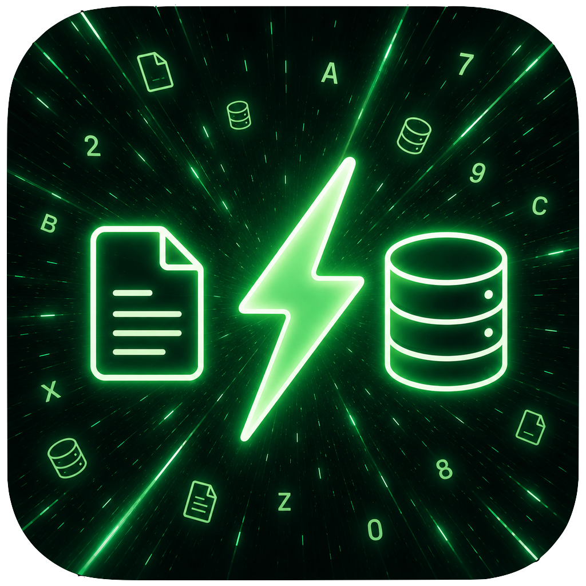

Welcome to Tablebase
Version 0.1.0
Open file(s)…
Add one or more CSV/TSV files to this window
Quit
Close Tablebase
Tablebase
Reset
Run
⌘
↵
—
Page 1
Save CSV
Open a CSV or TSV file to get started.
File configuration
Configure
the file
.
SQL abbreviation
Delimiter
Auto-detect
Comma ,
Tab
Semicolon ;
Pipe |
Header row
Auto-detect
First row is header
No header
Cancel
Apply